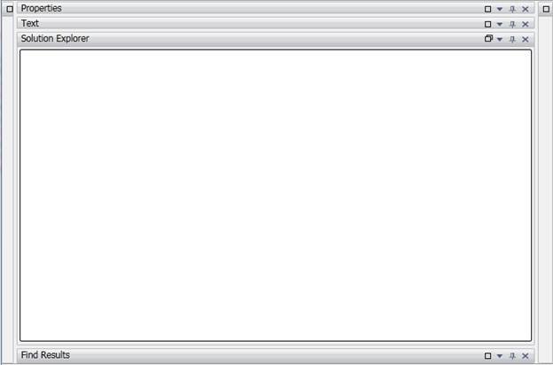

Particular window can be maximized on load by specifying its maximized state using MaximizedState property. It accepts two values MaximizedState.Maximized and MaximizedState.Restored. Only one window can be maximized at a time.
|
[XAML
<syncfusion:DockingManager Name="dockingManager" DockFill="True" ShowMaximizeButton="True"> <!-- Solution Explorer window is Maximized-->
<system:TreeView syncfusion:DockingManager.Header="Solution Explorer" syncfusion:DockingManager.SideInDockedMode="Right" syncfusion:DockingManager.MaximizedState="Maximized" syncfusion:DockingManager.DockState="Dock" syncfusion:DockingManager.WindowName="solutionexplorer" syncfusion:DockingManager.DesiredWidthInDockedMode="150"> </system:TreeView> <!--Text window is docked at top--> <TextBox x:Name="textBox" syncfusion:DockingManager.Header="Text" syncfusion:DockingManager.SideInDockedMode="Top" syncfusion:DockingManager.DockState="Dock" syncfusion:DockingManager.WindowName="text" /> <!-- Find Results is docked at bottom--> <ContentControl syncfusion:DockingManager.DockState="Dock" syncfusion:DockingManager.Header="Find Results" syncfusion:DockingManager.SideInDockedMode="Bottom" syncfusion:DockingManager.WindowName="findresults"/> <ListBox x:Name="listBox" syncfusion:DockingManager.DockState="Dock" syncfusion:DockingManager.Header="Properties" syncfusion:DockingManager.SideInDockedMode="Top" syncfusion:DockingManager.DesiredHeightInDockedMode="200"/> <!-- Help window is docked at Left--> <ContentControl syncfusion:DockingManager.DockState="Dock" syncfusion:DockingManager.Header="Help" syncfusion:DockingManager.SideInDockedMode="Left" syncfusion:DockingManager.WindowName="help"/> <!-- Find window is docked at Right--> <ContentControl syncfusion:DockingManager.DockState="Dock" syncfusion:DockingManager.Header="Find" syncfusion:DockingManager.SideInDockedMode="Right" syncfusion:DockingManager.WindowName="find"/> </syncfusion:DockingManager> |
|
[C#]
DockingManager.SetMaximizedState(this.treeView, MaximizedState.Maximized); |

Figure 126: Solution Explorer window is Maximized